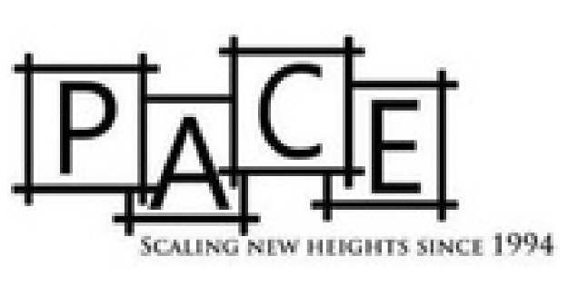
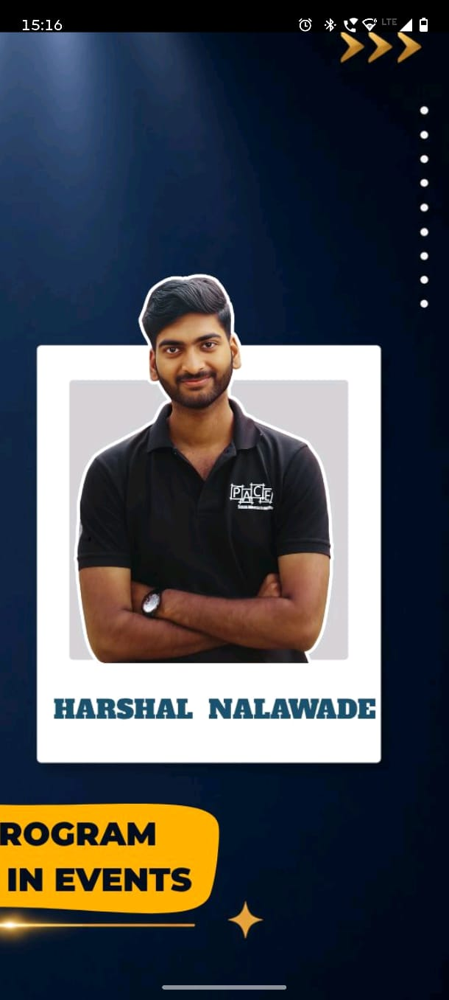

2001 — PRESENT
Prudence
National-level fest fostering managerial intellect and competitive thinking.
DISCOVER ↗
Let's connect ↗Personality Advancement Circle of Engineers — a student organization started in 1994, built around personality development, skill enhancement and experiences that move students beyond the classroom.
PACE was started to augment and enhance the personality of engineering students — and that idea still drives the community today.
We create spaces where students can communicate, compete, collaborate, lead and discover what they are capable of.
PACE experiences are designed around growth — from managerial thinking and placement readiness to social responsibility and discovering campus life.
National-level fest fostering managerial intellect and competitive thinking.
DISCOVER ↗Placement preparation assessments that simulate aptitude and technical rounds.
DISCOVER ↗Explore the campus, its culture and connect with student mentors.
DISCOVER ↗Student leadership is at the heart of PACE. Meet the Chief Board shaping the 2025 chapter.

PACE is a community of learners, leaders and doers at Walchand College of Engineering.